Alati | |
| Nazad | OpenOffice.org Writer | Napred |
Standardni alati
Na paleti sa standardnim alatima se nalaze dugmad koja se standardno koriste skoro u svakom programu (sa leva na desno redom).
Na ovoj traci se nalaze alati pomoću kojih utičemo na izgled teksta. Prvo selektujete deo teksta koji želite da menjate pa klikom na odgovarajući alat izvršite promenu.
| 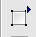 | Dugme pomoću kojeg ubacujete tabele, kolone, specijalne znake itd. |
Dugme pomoću kojeg ubacujete datum, broj strane naslov itd. | |
| 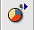 | Dugme za ubacivanje objekata u tekst grafikoni, formule itd. |
| 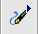 | Osnovni alati za crtanje. |
| 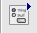 | Alati za forme i interakciju sa korisnikom. |
| 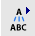 | Auto tekst. Sadrži skraćenice koje se automatski zamenjuju sa rečima dok kucate. |
| 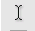 | Uključivanje / isključivanje opcije da pozicionirate kursor bilo gde na papiru. |
| 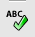 | Provera pravopisa. |
| 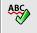 | Uključivanje / isključivanje automatske provere pravopisa dok kucate. |
| 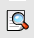 | Pretraga i zamena reči. |
| 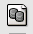 | Povezivanje sa bazom podataka. |
| 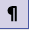 | Uključivanje / isključivanje oznaka za formatiranje teksta. |
| 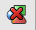 | Uključivanje / isključivanje prikaza slika u dokumentu. |
| 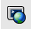 | Uključivanje / isključivanje On Line pogleda na dokument (kao na internetu). Podrazumevani pogled je Print Layout . |
| Nazad | Kući | Napred |
| Lenjiri | Gore | Formatiranje teksta |